你能想象得到的最大数是几呢？是无穷大吗？嗯，抱歉，无穷大不可能是最大的数，因为无穷大并不是一个数，而是一个量，一种数增大的趋势。事实上，数学上定义了多种无穷大，它们之间还可以相互比较大小 [此书分享微信wsyy5437]。
对于无穷大，我们每个人心中都有一个界定。我们用“无尽”“无数”和“无限”等词来描述无穷。粗看起来这些词都用得很合适，但是其实这些词本来就表述不同的含义，它们仅描述了某些无穷大的意义，而不能表达另一些。实际上无穷大是一个很奇特的概念。
关于无穷大的一个直观图。无穷大是无法企及的，但是数学家们仍能想尽办法运用它。
关于无穷大的一个游戏
通过想象一个无穷次才能完成的游戏，我们可以感受一些无穷大的含义。首先准备一个足够存放无穷多小球的大桶，设想我们真的有无穷多的球，每个球上还标记着数字，从1开始到无穷大。第一步，把前10个球（即标号为1至10的球）放入桶中，再取出1号球。第二步，把标号为11至20的10个球放入桶中，再取出2号球。持续这个过程，第n步把标号为10（n-1）+1， 10（n-1）+2，…，10（n-1）+10的10个球放入桶中，再取出第n号球——第三步取出3号球，第四步取出4号球，一直进行下去。无穷步后，最终桶里还剩下什么呢？有无穷多个球？还是根本就没有球了？实际上，此时桶里空无一球。虽然这个过程中放入球的速度远远快于取出球的速度，但是无穷次放入球的同时，我们也同样无穷次地取出球。因此，球桶最终被取空。
有限的时间
显然，上面的游戏并不具有可操作性，因为它需要耗费无限的时间。不过，我们可以想象一个1分钟内（或其他时间限制内）完成的关于无穷大的游戏。准备一盏灯和一个开关，计时开始时，我们摁动开关打开灯。半分钟后，我们再次摁下开关熄灭灯。1/4分钟后，再次开灯。持续这种操作，只是把每次开关灯的时间间隔减半，接下来，1/8分钟，1/16分钟……我们可以把剩下的时间无限细分。无穷次操作意味着开关灯动作永不停歇：每次开灯动作后会跟着一个关灯动作，反之亦然。但是，因为时间有限，最终时间一到，所有动作就要停下来。那么，最后的时刻灯是打开着还是熄灭了呢？我们无从知晓。
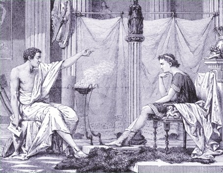
图中，数学家亚里士多德正在指导马其顿的亚历山大大帝。亚里士多德本人在处理关于无穷大的相关问题时也格外小心，因为他认为无穷大存在于神域。
芝诺悖论
芝诺最著名的悖论之一是“阿喀琉斯跑不过乌龟”。阿喀琉斯是古希腊神话中善跑的英雄，在他和乌龟的赛跑时，他让乌龟在其前方100米起跑。当乌龟向前跑了一段距离后，阿喀琉斯很快就追过来了，但是，同时，乌龟也已经又前行了新的一段距离。于是，阿喀琉斯不断地追到乌龟之前的位置，同时乌龟已经向前一段距离，又到了新的位置。阿喀琉斯不断地追赶，越来越靠近乌龟，但是他和乌龟之间总存在一段距离。
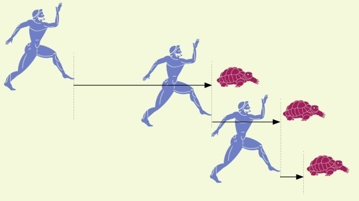
古代谜题
人们很早就意识到了无穷大的神奇。古希腊数学家们总是试图去避开无穷大，他们认为一条直线可以无限长，但是，无法达到。然而，生活在2500年前古希腊的哲学家芝诺提出了一系列有关无穷大的悖论——最著名的悖论之一，如第153页方框中所示——至此，当时数学家们对无穷大的最初设定被击溃了。
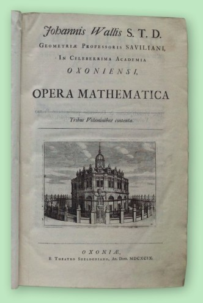
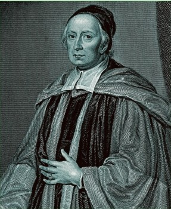
约翰·沃利斯于1665年引入无穷大的符号，即双纽线形∞。他在之后的著作《数学文集》（原名为Opera Mathematica）中运用了无穷大的概念。现在，这个符号已经被广为使用，包括在数学之外的学科。
真理浮现
悖论是一种看似自相矛盾的命题。如果假设命题成立，就能推导出命题为假，反之亦然。芝诺的大部分悖论可以总结为二分问题：一个物体要到达1千米处，它必须先经过0.5千米处，而它要到达0.5千米处，不得不先经过1/4千米的位置……按照这个思路，你会发现，我们走到终点（1千米远处）需要无限多步。而我们只有有限的生命，如何完成这无限多步呢？芝诺认为真实的运动不存在，一切变化都是幻象。当时其他人认为宇宙是由不可再分的元素构成的，他们称这些元素为原子。原子的不可再分性保证了人只要每次走一个原子的宽度，就能有限次走完，虽然这个数过于庞大。多年后，科学家确实验证了世界万物是由原子构成的。现代物理也发现原子并不是最微小的物质，不过，同时也发现时空均有下限，不能任意细分。当然，数学和数字可以超脱于真实世界之外存在，并没有数字“原子”不能被细分。事实上，任何数，无论多小，都可以被减半。
关于无穷大的计算
17世纪时，数学家们关注于如何一个一个地数清楚所有的数。比如从1数到2，中间有无数多个分数，怎样才能不多不少一个接一个地数出来呢？他们发现，想要数清楚，必然需要寻找一种方式处理无穷大。1665年，英国数学家约翰·沃利斯定义了无穷大的符号，即∞（他也给出了定义数轴的想法）。无穷大的符号是一根双纽线，即一个圈扭转一边，使中间自交的图形，进而这个图形无起点也无终点，恰与无穷大性质相同。
无穷和
无穷大符号∞可以用于简单的加减乘运算，但是却有别于一般的数：1+∞=∞， 10×∞=∞，以及(±∞)+(±∞)=±∞。这些式子意义明显，但是1/∞有相应的计算吗？沃利斯和其他数学家，如艾萨克·牛顿和戈特弗里德·莱布尼茨，开始着手研究两个整数之间的无穷多个分数之和，如0与2之间的。比方说， 1+1/2+1/4+1/8+1/16+…，即2的所有自然数幂的倒数之和。这个无穷和应该为2。为何呢？我们并不能直接对无穷多个分数一步一步求和验证猜测。接下来的两个世纪中，许多数学家提出了验证方法，以证明这些逐项等比例递减的分数，如果存在无穷和，其和必为2。但是，无论是2还是和式中的所有分数都是有理数，而人们早已知道无理数远远多于有理数，且无理数不能写成分数形式（见第40页的方框）。大多数无理数还是超越数（见第148页），即不遵循某些数学性质。那么，我们该如何去算这些数的无穷项之和呢？
感受无穷大
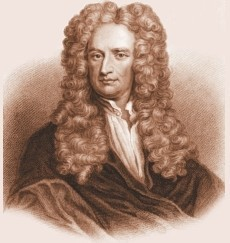
艾萨克·牛顿是17世纪80年代微积分理论的独立发明者之一，另一位主要的独立发明者是戈特弗里德·莱布尼茨。
在今天，微积分业已成为“艰深晦涩”的代名词。人们以数年对大量数学基本知识的学习掌握为前提，才有可能对微积分理论有一定的认识。微积分理论建立的目的是研究变量的性质。它把那些变量转化为一个无穷级数，前后项只相差一个无穷小量。微积分可以为复杂现象建立数学模型来进行研究，比如海浪模型。
数集合
解决上面问题的一种方式是把实数集合按性质分割成小集合（见第160页：集合论）。这方面工作的领军人物是德国数学家格奥尔格·康托尔。19世纪70年代，康托尔开创性地提出不同无穷集合的基数可以不同，无穷大与无穷大之间也有大小区别，这些想法颠覆了一直以来人们对无穷大这个概念的认识。这些想法看似奇特，但是现已被数学家们一致认可。而在康托尔生活的那个年代，许多同事嘲笑他，认为他的工作是毫无意义的。康托尔因为这些讥讽对立，精神上屡受刺激，患上了严重的精神疾病和抑郁症，所以，他晚年的大部分时间是在医院里度过的。直到20世纪早期，他已是迟暮之年，孤独且穷困潦倒，数学界才真正意识到他的工作的划时代意义。
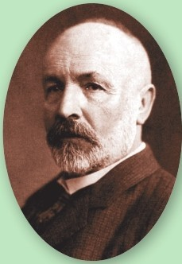
格奥尔格·康托尔关于无穷的研究奠定了现代无穷理论运用的基础。
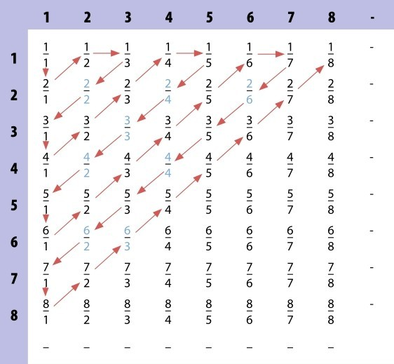
康托尔最著名亦是最易理解的成就之一是关于所有正有理数可以不多不少一个接一个数出来的证明，如右图所示，只要把所有正有理数按顺序排列成无穷行、无穷列的矩阵，以它们为格点，通过Z字形路线走遍所有格点。这种元素可以被一个一个数清楚的集合称为可列无穷集。
可数无穷大
最简单的无穷数集合是可以把元素一个一个按顺序数出来的，比如正整数集合：从1开始，然后是2，3，4，…，每次加1往下数，无限持续下去。康托尔把这种集合的基数定义为可数无穷大。这种集合亦称为可列无穷集，这个名称可能更为合适，因为人们可以罗列无穷多个数，却不能真的一个一个数完所有无穷个数。偶数集合、奇数集合和平方数集合等都是可数无穷集合。人们也许直觉认为这些集合都是自然数集合的真子集，所以基数应该更小。如偶数集合只有自然数集合中一半的元素。但是，这些集合都是无穷数集合，它们都能与自然数集合建立一一对应关系，进而，能一个一个按顺序罗列出来。
负向扩充
非零自然数均为正值，可以认为是沿着数轴正半轴往右，逐项递增地趋于正无穷大。添上0，沿着数轴往左，自然数的相反数以逐项减1的方式递减地趋于负无穷大。这些非零自然数与它们的相反数以及0构成整个整数集合。整数集合也是可列无穷集。整数集合比非零自然数集合似乎多了一倍的元素，但其实它们有相同的基数。
无穷基数
数学上，一个集合的基数是指其含有的元素的个数。因此，在《白雪公主》故事中小矮人构成的集合的基数为7，《101斑点狗》故事中斑点狗构成的集合的基数为101。同样，一个无穷集合的基数为无穷大。但是，人们发现有些无穷大要大于其他的无穷大。为了阐述清楚这种区别，康托尔运用希伯来语阿列夫（ℵ），引入了一套无穷基数概念。可列无穷集具有最小的无穷基数，如整数集合，基数为阿列夫零（ℵ0）。不可列集，如实数集合，基数为阿列夫1（ℵ1）。
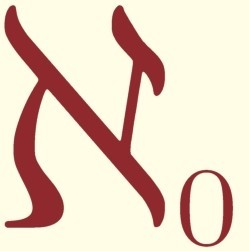
有理数集合
整数集合是有理数集合的真子集。非整数的有理数是分数。当然，分数集合也是无穷集合。但分数集合也能如整数集合那样一个一个元素按顺序罗列吗？分数是由两个整数进行除法运算得到的，因此，只要分别按分母和分子排序，走一条特殊路径即可：从1/2开始，然后是1/3，1/4， 1/5，…，所有分子是1的分数按分母逐项增大排列；第二行从2/1开始，然后是2/2，2/3，2/4，…，所有分子是2的分数按分母逐项递增依序排列；按照这种方式康托尔可以把所有有理数排成一个无穷行、无穷列的矩阵。沿着简单的Z字形对角线路径，康托尔向大家展示了罗列所有有理数的一种方式，这种方式被后人称为康托尔的“对角线论证”，读者可参见第156页下方的框图。
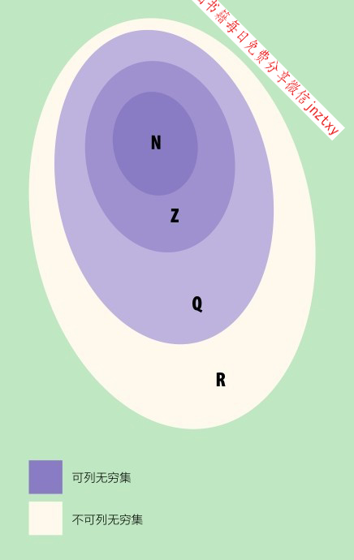
上面的韦氏图表明不同无穷集之间的包含关系。其中，N表示自然数集合，Z表示整数集合，Q表示有理数集合，R表示实数集合。
希尔伯特的旅馆
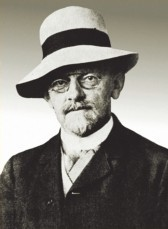
大卫·希尔伯特是德国著名的数学家。他曾问学生一个问题：设想一个旅馆有无穷多个房间，某个忙碌的夜晚，旅馆住满了客人，翌日，又有无穷多个新客人造访，这时，柜台该怎么做呢？旅馆不想放弃这份不菲的收入，可是已客满。希尔伯特想以这个例子说明无穷大并不是真正的数。他可以轻松解决柜台的难题，只要让所有原来的客人都搬到房号为旧房间号乘以2的新房间，就能空出所有奇数房号的房间，进而让新客人入住。
不可列集
有理数集合是可列集，与整数集合同基数。即使如此，两个整数之间的所有分数，如1与2之间的分数，就已经构成一个可列集。换言之，1与2之间有整数那么多的分数。接下来考虑无理数，情况更为复杂。无理数，如
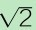
和π，虽亦坐落在数轴上藏于有理数之间，但无法如有理数一般写清楚每一位数码，因此，无理数并不能按顺序一个一个罗列完整。所以，有理数和无理数的并集，即实数集合，是不可数的，或称为不可列的。康托尔认为不可列集的基数要严格大于可列集的基数。不可列集中含有远远多于可列集的元素。对于两个可列集，可以在两者之间建立一一对应关系：两者的第一个元素相互对应，第二个元素相互对应，第三个元素相互对应……按这个原则把两个集合的所有元素对应起来。这种方式却不适用于不可列集之间。无穷集合使得你每取完一个数，剩下的数仍然构成一个无穷集合。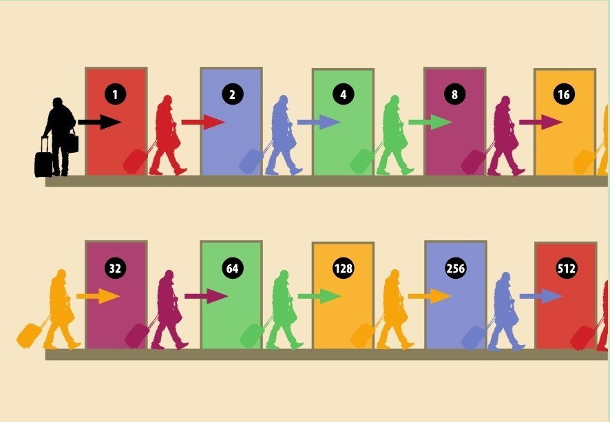
参见：
▶零，第30页
▶素数，第58页
▶集合论，第160页
▶10的古戈尔次方：古戈尔普勒克斯，第168页